Proof for PR 1600
NOT VERIFIED · BLOCKEDIndependent preview verification on 1 November 2026. Pro checkout is blocked by the preview's missing Stripe configuration. The other scoped behavior checks pass. Required proof remains incomplete. Routing is steer. No sign-off and no merge.
Head 1e53523a2602993ee6dcad7e96bddf77f921b1b0
PR 1600 · Issue 1434 · Preview · Round 1 design
Checks
| Result | Criterion | Evidence |
|---|
| PASS | Meter states and kept pages | 0, 2, 3 and 5. Desktop and phone. Updates without a reload. |
| PASS | Pro | No meter on desktop or phone. |
| PASS | Page limit flow | Close preserves draft. Unpublish then Publish succeeds in one dialog. |
| PASS | Video limit flow | videos_share returns a saved draft. pages_publish makes that same page live. |
| PASS | Server limit | Direct fourth publish returns 409 live_page_limit. |
| PASS | Owner isolation | Another mock account receives pages []. |
| NOTES | Design | Differences and observed strings are recorded below. |
| BLOCKED | Pro checkout | Both Upgrade controls return 503 not_configured. Six retries agree. |
| PASS | Existing tests | 4 files, 44 tests passed. |
| PASS | Cleanup | Original grant and kept flag restored. Created pages and videos deleted. |
Before and After evidence
Before is a read-only Pro account on staging main 66af49adf. It is a shell baseline, not a matched Free-account reproduction. After is this PR preview at the exact head. All pictured content is synthetic test data.
Before on staging main, Pro shell baseline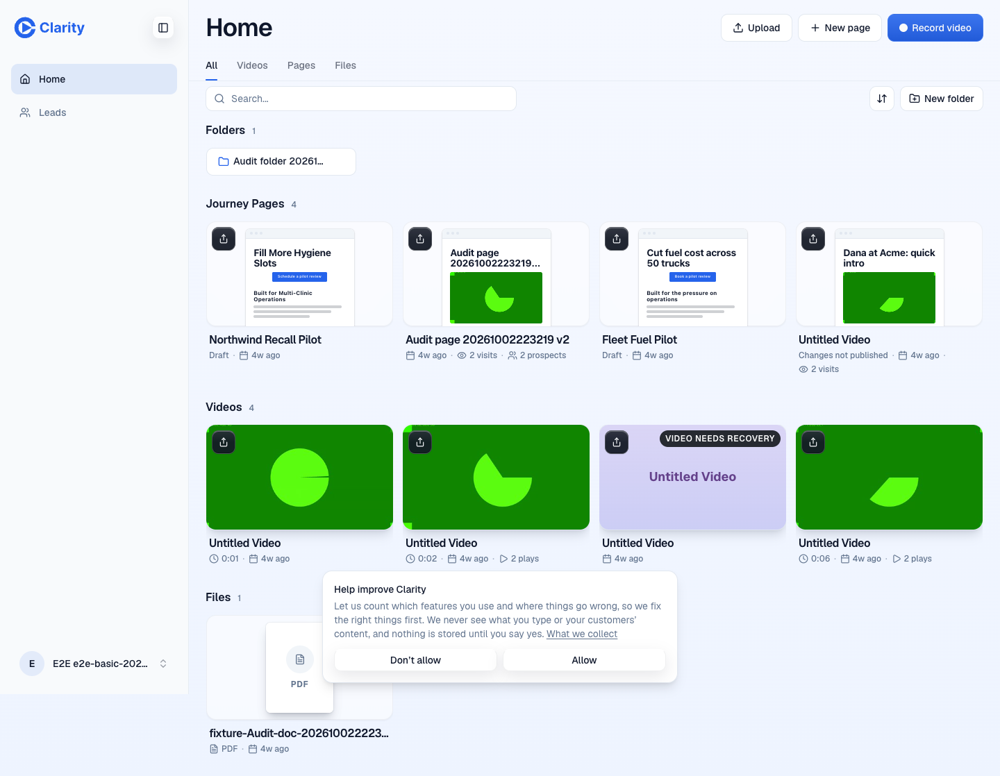
Before on staging main, phone More sheet, Pro baseline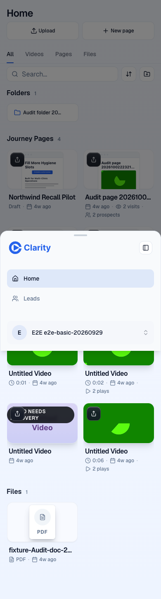
Preview Pro, no meter Preview Pro, no meter in More
Preview Pro, no meter in More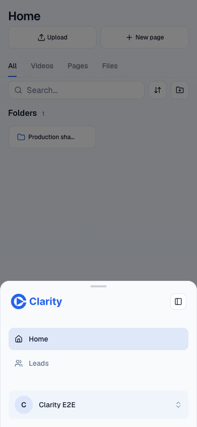
Free at 0, desktopFree at 0, phone More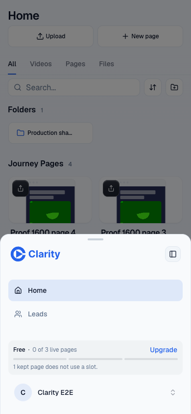
Free at 2, desktop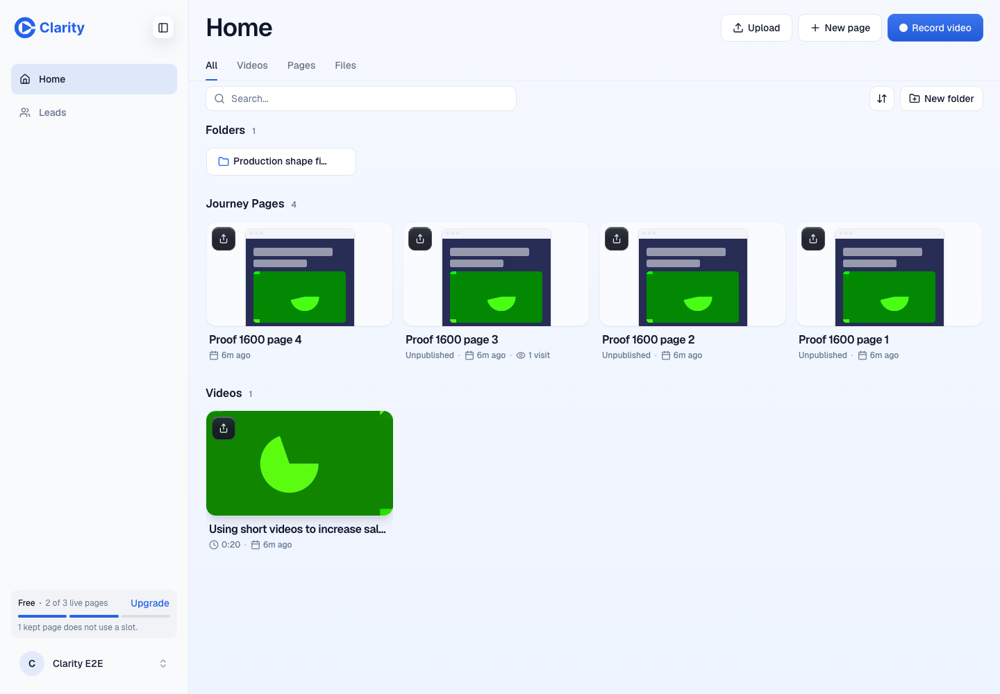
Free at 2, phone More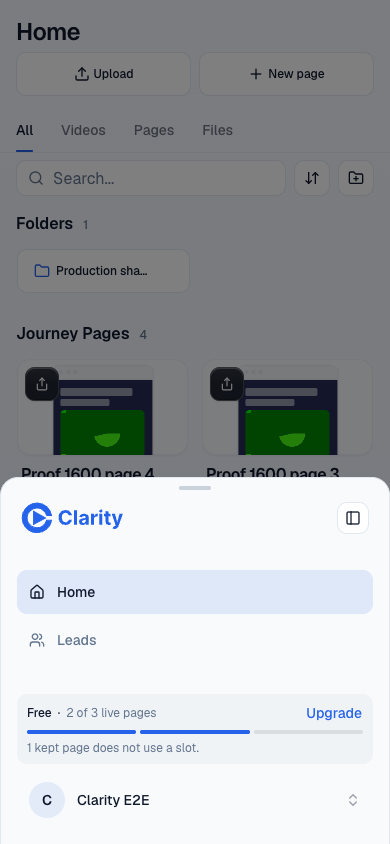
Free at 3, desktopFree at 3, phone More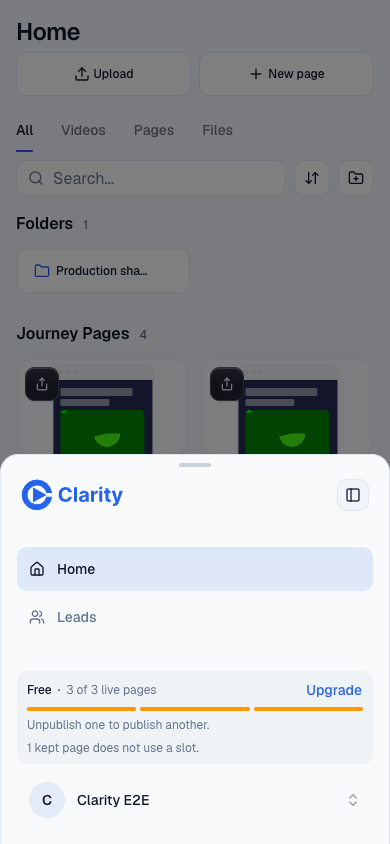
Free at 5, desktop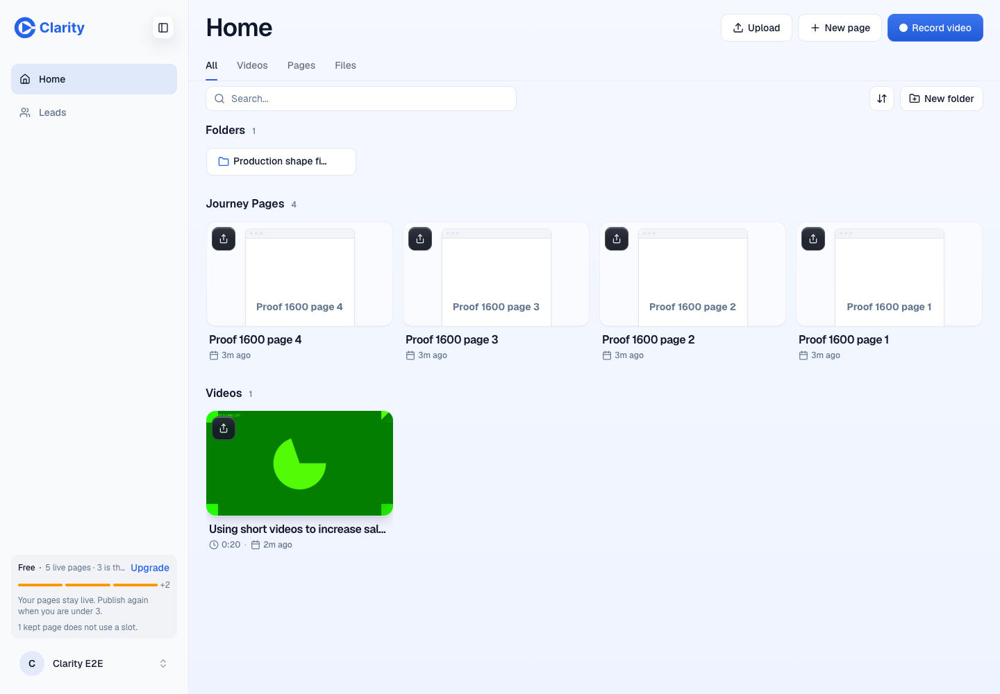
Free at 5, phone More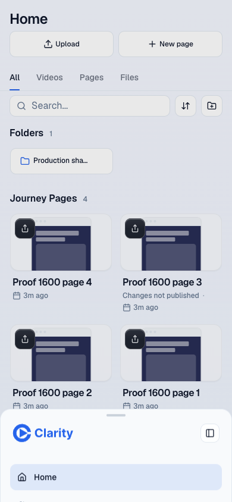
Limit dialog, loaded thumbnails and Last viewed just now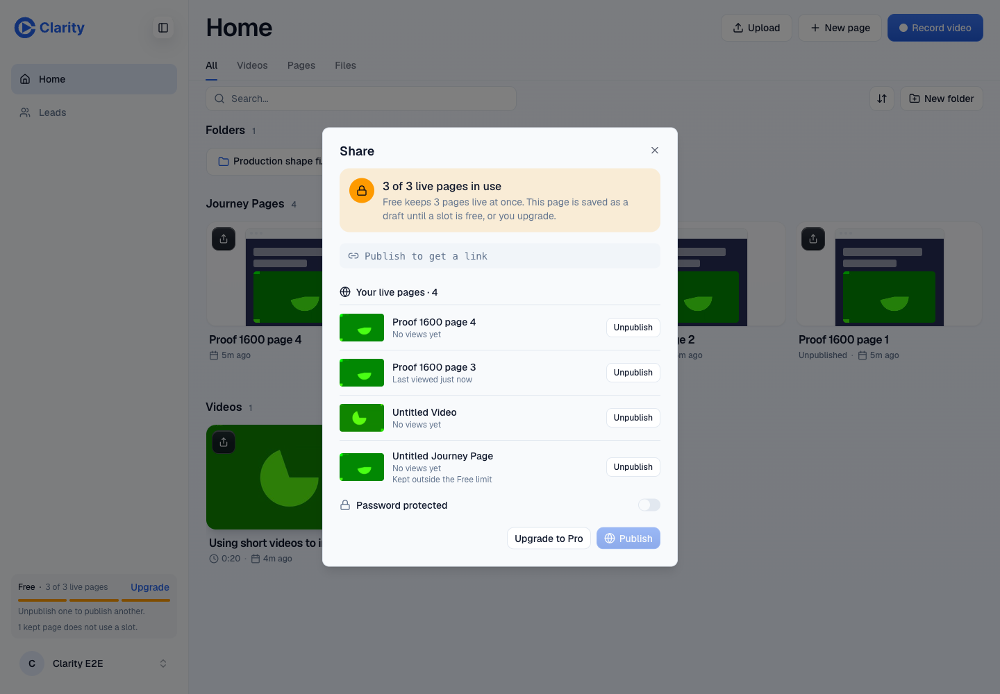
Limit dialog, phone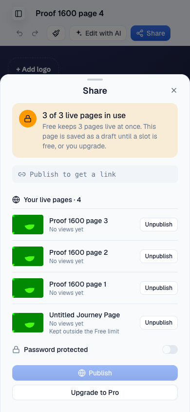
After Unpublish, meter is 2 without a reload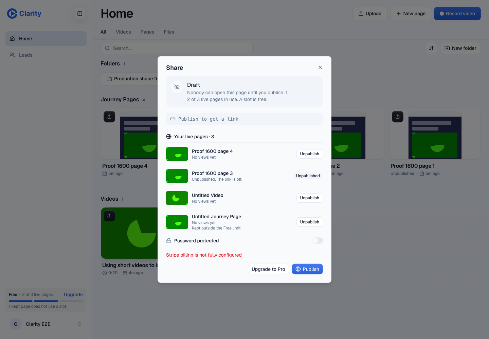
After Unpublish, phone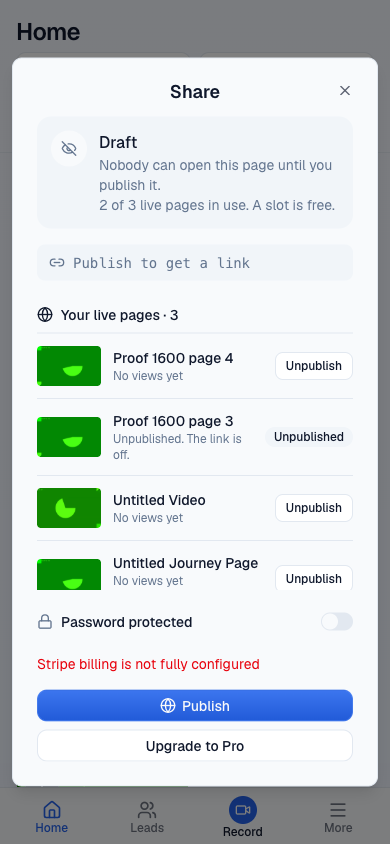
After Publish, meter is 3 without a reloadAfter Publish, phone More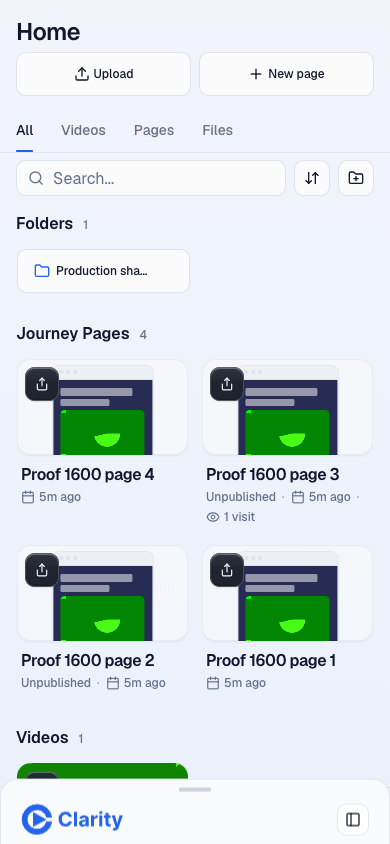
Refused video share, saved draft and limit dialog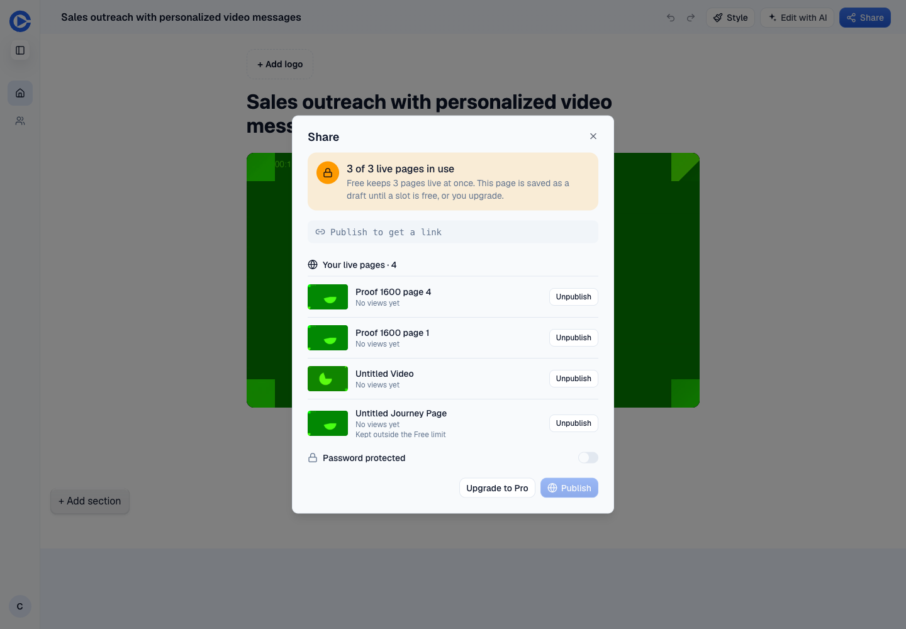
Refused video share, phone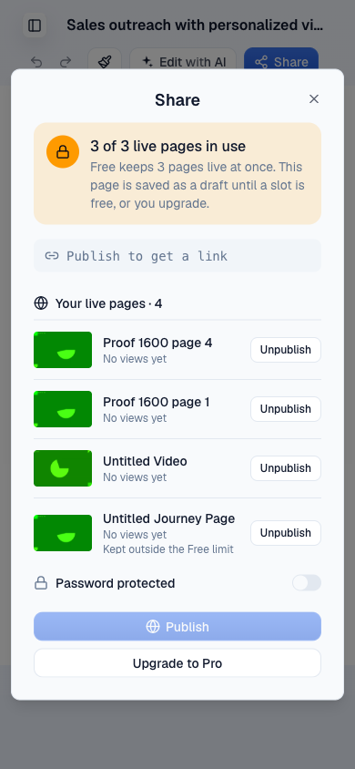
Video draft, slot freed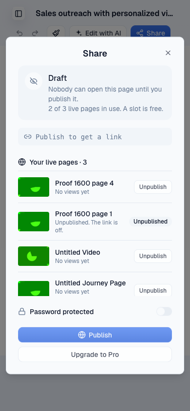
Video draft published, desktop editor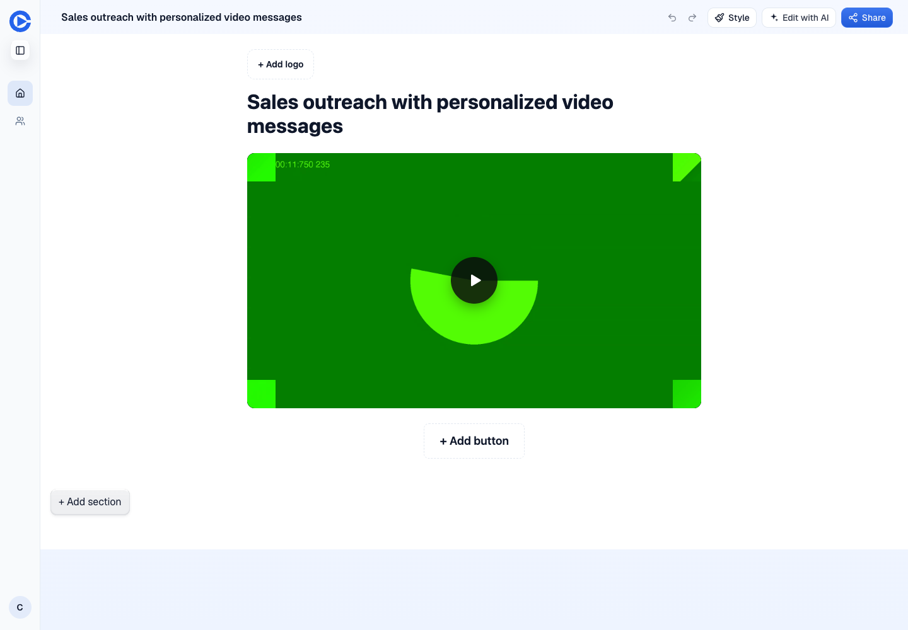
Video draft published, phone editor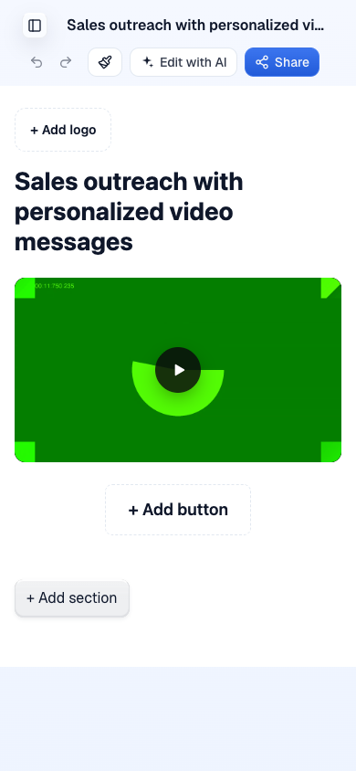
Meter Upgrade blocked by preview billing configuration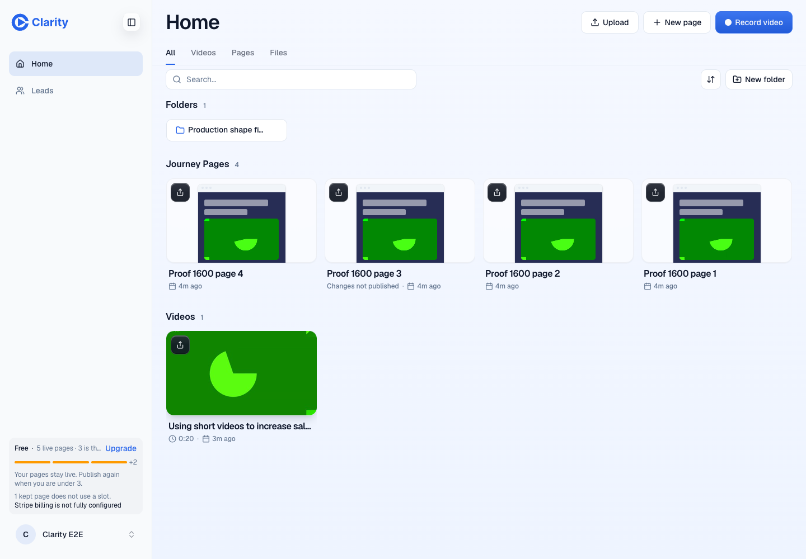
Dialog Upgrade blocked by the same configuration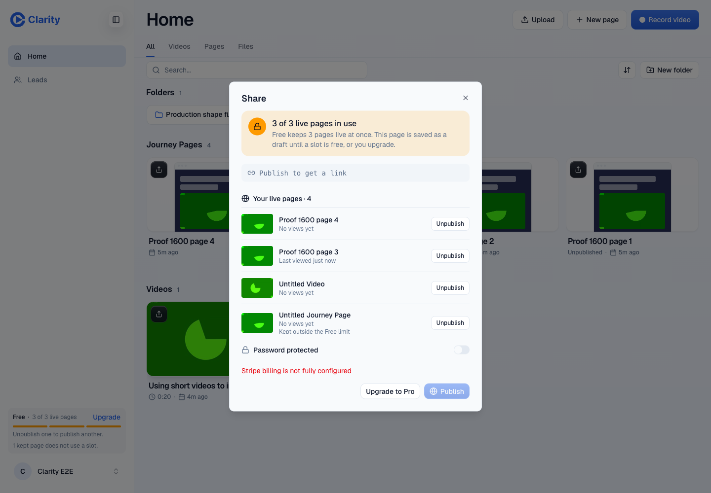
Requests and results
doctor.txt · meter-network.json · close-draft.json · published.json · video-draft-before.json · video2-network.json · video-published.json · other-owner.json · over-plan.json · meter-checkout.json · dialog-checkout.json · checkout-retries.json · record-take.txt · record-take-2.txt · cleanup.json · restored.json · final-plan.json · notes.txt
Findings, strings and writes
Independent verification of PR 1600
Head 1e53523a2602993ee6dcad7e96bddf77f921b1b0
Preview https://pr-1600.clarity-video.workers.dev
Issue https://github.com/Clarity-Video-HQ/clarity/issues/1434
Routing steer. William has not signed off. Waved through none.
Verdict BLOCKED. The required Pro checkout destination is unproven because billing_checkout_start returns HTTP 503, billing_error, not_configured, Stripe billing is not fully configured. Both visible Upgrade entry points were clicked. Six further calls 15 seconds apart returned the same result. No checkout was completed.
Evidence scope
The scoped criteria from issue 1434 and sections 3 and 4 of issue 1430 are covered below. Other work in the parent Free-plan program is outside this PR.
1. Meter states pass. Real plan_get responses drove 0, 2, 3 and 5 counted Live pages, with 1 kept page outside the count. Desktop at 1440 by 1000 and phone at 390 by 844. The phone More navigation is a bottom sheet. The library dialog screenshots show the meter updating from 3 to 2 after Unpublish, and back to 3 after Publish without a reload.
2. Video share at the limit passes. The second fake-camera take used videos_share and returned HTTP 409 with pageId 4f5ffbd1-4bfc-4c65-b4de-9f1616e925d5. A separate pages_get returned stage draft and no share URL. The same limit dialog appeared on desktop and phone.
3. Unpublish then Publish passes. The page entry point published ac41df47-9363-458c-83b8-6a9c0f7c585f after a slot was freed. The video entry point used pages_publish with revision 1 to publish the saved draft after pages_unpublish succeeded. Both persisted as live in a subsequent pages_get. An extra library entry-point run showed the meter updating without reloading.
4. Draft persistence passes for Close. Closing the limit dialog left ac41df47-9363-458c-83b8-6a9c0f7c585f at stage draft with shareUrl null and publishedRevision null. A refused video share likewise persisted as a draft. The upgrade destination remains blocked, so persistence across a completed checkout redirect is not claimed.
5. Desktop and phone design comparison is documented, with differences treated as notes as the brief requires. The dialog lists titles, real loaded thumbnails, No views yet and Last viewed just now. A real view of the mock page generated that timestamp. No form was submitted.
6. Pro has no meter on desktop or in the phone More sheet. plan_get returned plan pro and limit null.
7. A direct fourth pages_publish returned 409 live_page_limit, count 3 and limit 3. No fourth publication was created.
8. Owner isolation passes. A separately authenticated userBasic mock account, owner user_01M3PV8M8X9PVZ9V94Y1MGRKQ0, received HTTP 200 and pages [] from pages_live while userPro had Live pages.
9. Upgrade to Pro checkout is BLOCKED by preview configuration as described above.
Before evidence
Staging served main 66af49adf5da8ca3704ea733b6277b4aa3966766. The Before screenshots show its shell on the seeded userBasic account. That account is Pro, so these are a read-only shell baseline, not a matched Free-account reproduction. No staging data was changed. The PR preview screenshots and network evidence prove the new Free behavior. No old-head screenshots were reused.
Design notes for William
The comparison is against round 1 sections 3 and 4 at https://willayam.github.io/clarity-design-previews/free-plan-designs/ . These notes are not failures under the brief.
- Empty meter segments are gray rather than the design's pale blue. The implemented meter uses the app's current foreground, primary and warning tokens.
- The over-limit sentence says Your pages stay live. Publish again when you are under 3. The design says Kept from your trial. Publish again when you are under 3.
- The over-limit first line is visibly ellipsized in the desktop sidebar. Its full text is 5 live pages · 3 is the Free limit. The phone sheet has more width.
- The kept-page line is additional, and kept pages appear in the Live list with Kept outside the Free limit. The list can show four rows while the counted usage is 3 of 3.
- The list uses media poster thumbnails rather than the design's miniature page previews. The implemented thumbnails are 64 by 40, versus the design's 56 by 36, and rows have more vertical padding.
- Rows show last view or No views yet, without the design's view count.
- Unpublish leaves an Unpublished badge and Unpublished. The link is off. The design offers Undo and colors the status green. The implementation does not offer Undo.
- The freed-slot sentence uses A slot is free. The design uses One slot is free.
- The link placeholder has a link icon and a shorter, squarer container. The design has a taller rounded link chip. The dialog follows the current app's spacing, header and icon sizes rather than reproducing all mockup dimensions.
- More and Share are bottom sheets on phones. The design depicts More as a left drawer. On the phone, Publish is above Upgrade to Pro; on desktop they sit beside each other.
- The surrounding shell has Home and Leads rather than the design's Home, Contacts, Learn and Settings. The actual account and library fixtures differ from the design's sample content.
- A generated video appears as Untitled Video in pages_live even though its editor heading follows the generated video title. This is a nearby title-presentation note, not a fix made in this verification.
Strings observed
Free
Upgrade
0 of 3 live pages
2 of 3 live pages
3 of 3 live pages
5 live pages · 3 is the Free limit
+2
Unpublish one to publish another.
Your pages stay live. Publish again when you are under 3.
1 kept page does not use a slot.
Share
3 of 3 live pages in use
Free keeps 3 pages live at once. This page is saved as a draft until a slot is free, or you upgrade.
Publish to get a link
Your live pages · 4
Your live pages · 3
No views yet
Last viewed just now
Kept outside the Free limit
Unpublish
Unpublished
Unpublished. The link is off.
Draft
Nobody can open this page until you publish it.
2 of 3 live pages in use. A slot is free.
Password protected
Upgrade to Pro
Publish
Close
Stripe billing is not fully configured
Checks run
Fresh detached worktree at the required SHA. pnpm install --frozen-lockfile --prefer-offline succeeded. Four existing Vitest files passed, 44 tests total, in 6.28 seconds. Files were free-usage-limit.test.tsx, live-page-list.test.ts, video-share-page.test.ts and account-plan-actions.test.ts. No red-to-green test is required for this enhancement. No code or test files changed.
The control-clarity CLI performed login, doctor, navigation, clicks, snapshots, eval, screenshots and two record-take runs with the en fixture, pause mode, one run each. Both recordings returned outcome draft. Supplementary Playwright attached to that worktree's isolated browser for viewport sizing, settled captures and sanitized request/response evidence.
Doctor passed against the exact head before verification and again at the end. Shell network failures recovered on retry. Browser failures were expected 409 limit refusals, a fixture setup 422 empty-page rejection, four fixture rename 400s from a corrected input field, a stale-revision 409 after fixture renaming, and the checkout 503 blocker. One Mux thumbnail network failure later returned 200. Navigation aborted two media requests. No separate product exception was found.
Every direct preview database write
All six UPDATE statements targeted clarity-pr-1600-auth, database ed09da17-5ba3-406d-b0fe-bf1e56808419, through the generated and checked preview config. No production or staging database was written.
1. access_grants.ends_at for grant:e2e-accounts:acct_workos_user_01M3PV8N4H36ZZPHGXFXWCQPM3 changed from 2030-01-01T00:00:00.000Z to 2026-10-01T00:00:00.000Z.
2. journey_pages.kept_reason for e300555e-6ee9-5dda-aecb-26f50e242a73, owned by user_01M3PV8N4H36ZZPHGXFXWCQPM3, changed from NULL to legacy_watch.
3. The same grant was temporarily restored to 2030-01-01T00:00:00.000Z to publish beyond the Free limit as Pro.
4. The same grant was ended again at 2026-10-01T00:00:00.000Z to test Free with five counted pages.
5. Cleanup restored that grant to its original 2030-01-01T00:00:00.000Z.
6. Cleanup restored the original fixture's kept_reason to NULL.
Preview application writes
Four pages were created, filled with the preview's existing synthetic block document, and renamed Proof 1600 page 1 through 4. Their IDs were 38379501-6e67-4479-8dbe-d6f419559e46, 6a68f836-f6a7-4a91-a7c5-78fc43a60606, 71d7270e-d63f-45fd-9e17-7a1f2838839f and ac41df47-9363-458c-83b8-6a9c0f7c585f. There were four pages_create, four pages_save_draft and four successful pages_rename calls.
Two record-take runs uploaded mock media and created video records tkU02L9n5MpaHSod02A8famF00hskoagAnj6D8tImeT7UE and dyG3NiGDVFqWjdN401fbUd3p1SoLl6c1005pXYklXnUc4. Each refused videos_share saved its auto page as a draft, c4de6046-3717-4c7b-a554-64714c14e58d and 4f5ffbd1-4bfc-4c65-b4de-9f1616e925d5.
To exercise the flows and retake settled evidence, successful publish/unpublish counts by page were page 1 four/four, page 2 two/two, page 3 one/one, page 4 two/one, first video page two/one, second video page one/zero. These calls wrote publication revisions, routes and their normal derived records.
One anonymous mock-page visit generated ordinary page-view telemetry for page 3. The app also emitted its normal preview RUM and recording jobs. No lead form was submitted. Checkout attempts were refused before reaching checkout.
Cleanup used pages_delete on the four created pages and library_delete on the two mock recordings. Both auto pages were deleted with their videos. All six cleanup calls returned 200. The original account returned to Pro with one Live fixture and no keptCount. Existing shape fixtures were retained. Soft-deleted rows and ordinary audit/telemetry history remain in the preview.